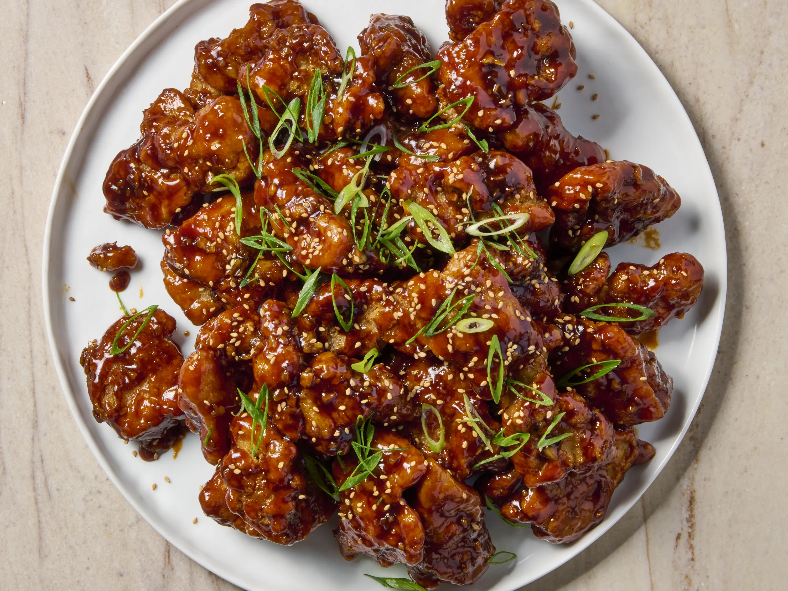

Roscoe's Korean Fried Chicken

Description
Roscoe's Korean fried chicken is coated in a thin batter, dredged, and
then fried twice, and served with a spicy ginger, garlic, and gochujang
sauce.
Ingredients
Chicken
- 12 mixed wingette or drummette chicken wings
- 6 chicken legs
- 2 tablespoons ginger
- 2 tablespoons garlic
- 1/2 teaspoon salt
- 1/4 teaspoon freshly ground black pepper
- 1 cup water
Dredge
- 1 cup all-purpose flour
- 1/2 cup potato starch
- 1/2 cup cornstarch
- 1 cup wheat dextrin (such as EverCrisp® Breader and Batter Boost)
- 1 quart vegetable oil for frying, or as needed
- salt and freshly ground black pepper to taste
Sauce
- 2 teaspoons sesame oil
- 2 teaspoons grated garlic
- 1 teaspoon grated fresh ginger
- 1/4 cup brown sugar
- 4 tablespoons gochujang (Korean hot pepper paste)
- 2 teaspoons white vinegar
- 1/2 cup water
-
1 teaspoon toasted sesame seeds, or as needed for garnish (optional)
- 1 tablespoon chopped peanuts, or as needed for garnish (optional)
Steps
-
Place a wire rack inside a rimmed baking sheet. In a large bowl toss
chicken wings, chicken legs, ginger, garlic, salt, pepper, and water
together. Mix well.
-
In another bowl combine flour, potato starch, cornstarch, and EverCrisp
in a large mixing bowl. Whisk ingredients until fully mixed. Season with
salt and pepper.
-
Add 1 cup of flour mixture to the bowl with chicken. Mix into chicken
and water to make a very thin batter.
-
Add chicken to the flour bowl and toss and press until completely
dredged in mixture. Place on the prepared wire rack until ready to fry.
-
Heat oil in a deep fryer or large saucepan to 325 degrees F (165 degrees
C). Line a second rimmed baking sheet with paper towels, and place a
clean wire rack on top.
-
Add chicken pieces to the hot oil about 5 pieces at a time so as not to
drop the temperature of the oil. Fry for 6 minutes. Transfer chicken to
the rack over the paper towel-lined baking sheet tray. Continue with
remaining chicken pieces.
-
Increase oil temperature to 350 degrees F (175 degrees C) until
continuously boiling. Carefully add the first batch of cooked chicken
and fry again until cooked through and crispy, about 5 minutes more.
Transfer to a plate lined with paper towels to drain. Repeat with the
second batch of chicken pieces.
-
Transfer chicken to a medium-sized serving bowl. Heat a small saucepan
over medium-low heat. Add sesame oil, grated garlic, grated ginger,
brown sugar, gochujang paste, vinegar, and 1/2 cup water. Cook and stir
continuously until sugar has melted and sauce is smooth, about 5
minutes. Drizzle sauce over twice-fried chicken pieces, garnish with
sesame seed and peanuts, and serve.